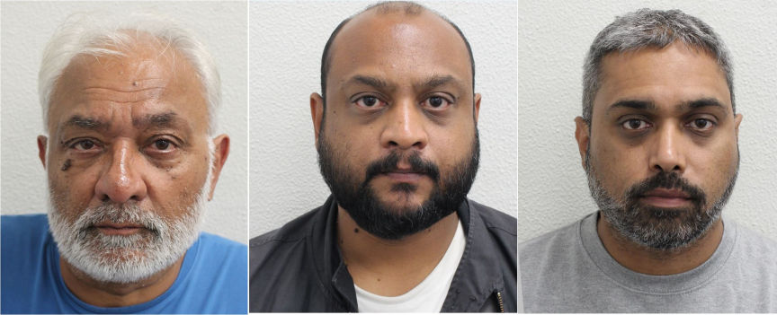
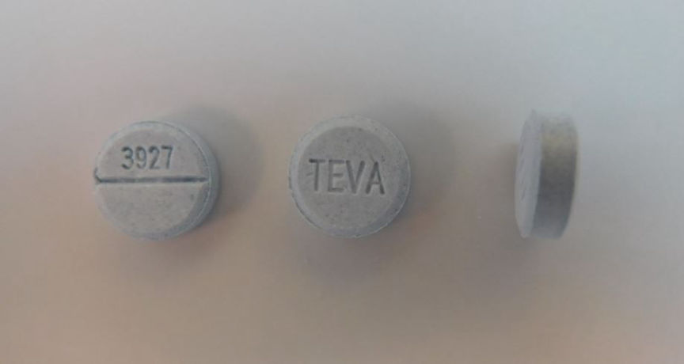
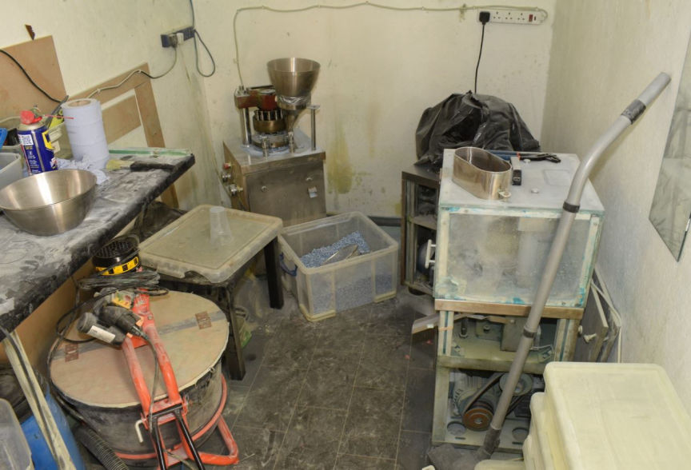
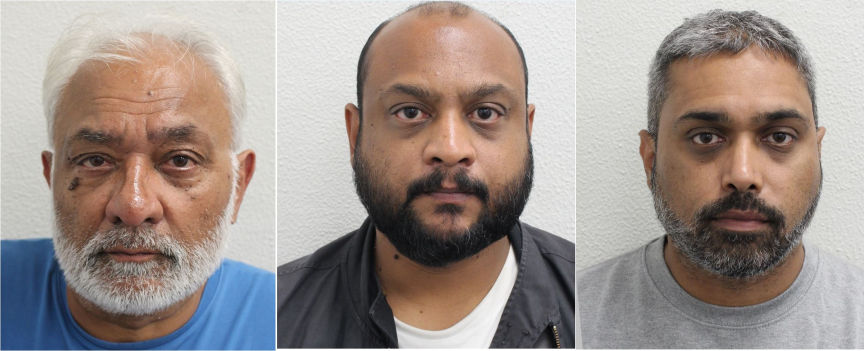
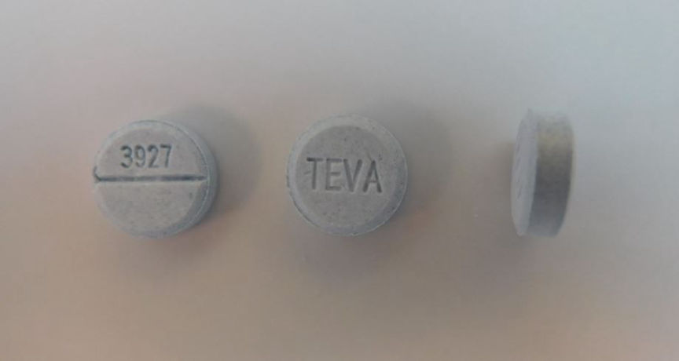
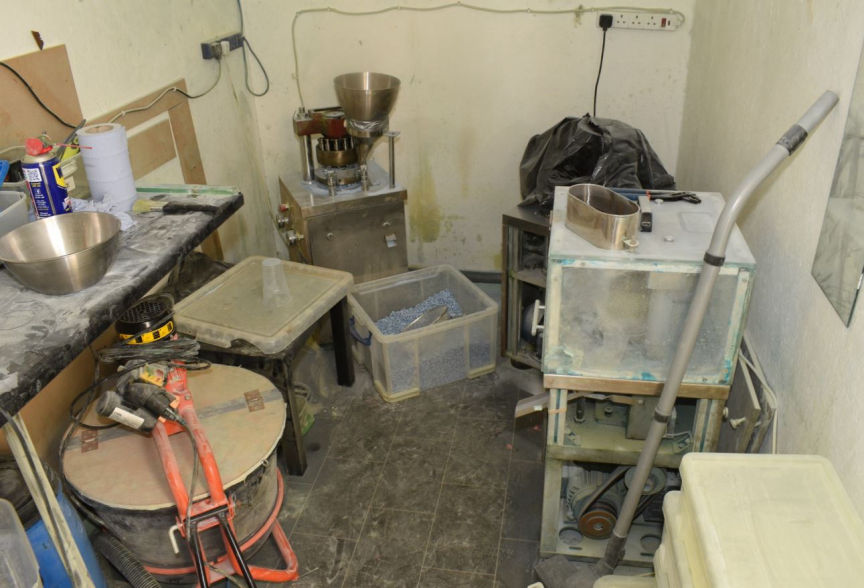

UK Trio Manufactured and Sold Counterfeit Xanax Pills
~2 min read | Published on 2023-05-11, tagged Arrested, Darkweb-Vendor, Drugs, Pleaded-Guilty using 417 words.
Three London men were found guilty of conspiring in the manufacture and distribution of large quantities of counterfeit pills through the dark web.

According to the Metropolitan Police, 62-year-old Allen Valentine, his 39-year-old son, Roshan Valentine, and Roshan's childhood friend, 40-year-old Krunal Patel, made over $4.4 million from the production and distribution of counterfeit Xanax and Diazepam pills through multiple dark web marketplaces.
Investigations into the trio's drug trafficking operation were launched in January 2022 by the Cyber Crime Unit after receiving information from the DEA that the men were distributing counterfeit pharmaceutical drugs through the dark web.
The investigators established that the trio was operating from a warehouse in West London disguised as the operations center of a logistics company. Surveillance at the warehouse revealed that the men went to the warehouse daily. The investigators reportedly saw Patel frequently leave with large bags and return 10 to 15 minutes later without the bags.
The investigators arrested Patel outside the warehouse on August 17, 2022. He was carrying 15 drug packages addressed to buyers across the UK. The investigators found an undisclosed number of pills labeled "Xanax" and "Teva". The investigators arrested Roshan and Allen later that day.

After searching the warehouse, the investigators found a fully equipped pills production lab. They also found and seized an undisclosed number of crates filled with pills made at the lab. The pills tested positive for Benzodiazepines including Deschloroetizolam, Flubromazepam, Bromazolam, and Flualprazolam.

The investigators also froze bank accounts that the trio had used to cash out over $4.4 million in cryptocurrency.
The three men were as a result charged with conspiracy to produce Class C drugs and money laundering offenses.
Roshan and Patel pleaded guilty to the charges on February 10, 2023.
During the trial, Allen told the jury he was a doctor and qualified pharmacist and pleaded not guilty. The jury, however, found him guilty on May 9, 2023.
A confiscation hearing to order the trio to forfeit the proceeds of the drug trafficking operation is set to take place.
The trio's sentencing date has not been determined.

Allen, Roshan and Patel
According to the Metropolitan Police, 62-year-old Allen Valentine, his 39-year-old son, Roshan Valentine, and Roshan's childhood friend, 40-year-old Krunal Patel, made over $4.4 million from the production and distribution of counterfeit Xanax and Diazepam pills through multiple dark web marketplaces.
Investigations into the trio's drug trafficking operation were launched in January 2022 by the Cyber Crime Unit after receiving information from the DEA that the men were distributing counterfeit pharmaceutical drugs through the dark web.
The investigators established that the trio was operating from a warehouse in West London disguised as the operations center of a logistics company. Surveillance at the warehouse revealed that the men went to the warehouse daily. The investigators reportedly saw Patel frequently leave with large bags and return 10 to 15 minutes later without the bags.
The investigators arrested Patel outside the warehouse on August 17, 2022. He was carrying 15 drug packages addressed to buyers across the UK. The investigators found an undisclosed number of pills labeled "Xanax" and "Teva". The investigators arrested Roshan and Allen later that day.

The counterfeit pills
After searching the warehouse, the investigators found a fully equipped pills production lab. They also found and seized an undisclosed number of crates filled with pills made at the lab. The pills tested positive for Benzodiazepines including Deschloroetizolam, Flubromazepam, Bromazolam, and Flualprazolam.

The laboratory
The investigators also froze bank accounts that the trio had used to cash out over $4.4 million in cryptocurrency.
The three men were as a result charged with conspiracy to produce Class C drugs and money laundering offenses.
Roshan and Patel pleaded guilty to the charges on February 10, 2023.
During the trial, Allen told the jury he was a doctor and qualified pharmacist and pleaded not guilty. The jury, however, found him guilty on May 9, 2023.
Quote:Detective Constable Alex Hawkins, of the Metropolitan Police’s cyber crime unit
The three men ran a sophisticated, large scale production of fake pharmaceutical drugs sold on the dark web that appeared to be genuine. Their operation was solely for the greed of those involved bearing no concern for the vulnerabilities of those purchasing these drugs.
Some of the drugs contained completely different chemicals from those which should be in the genuine tablets; some of them are extremely dangerous.
A confiscation hearing to order the trio to forfeit the proceeds of the drug trafficking operation is set to take place.
The trio's sentencing date has not been determined.